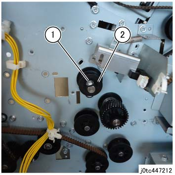
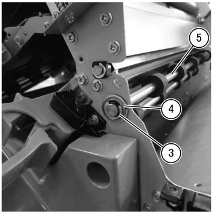
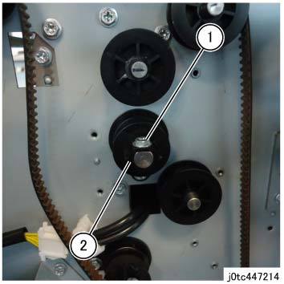
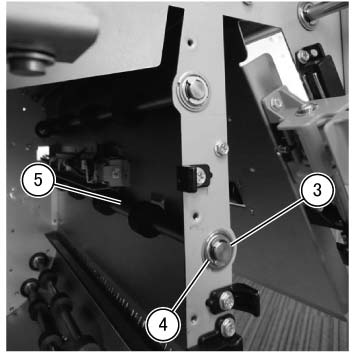

REP 47.30.2 TCB 送纸 辊 组件 
参考 PL:PL 47.30
TCB 送纸 辊 组件 (上方 侧面)

执行IOT关机步骤. 确认电源已关闭并拔掉电源插头.
安装
打开前盖板. (PL 47.1)
拆卸后盖板. (PL 47.2)
拆卸顶盖组件. (PL 47.1)
拆卸 TCB 出纸 电机组件. (PL 47.30)
松开 皮带 (TCB 出纸 电机). (PL 47.30)
拆卸 Pre Regi 电机组件. (PL 47.11)
拆卸 顶部 Support 支架. (PL 47.5)
执行 步骤 2 的 Removal 步骤 用于 the 手送 挡板 电磁阀 组件 (REP 47.13.3).
执行 the Removal 步骤 用于 the TCBM SW/LED PWB 组件 (REP 47.5.1) 从 Steps 3 to 7.
执行 步骤 5 的 Removal 步骤 用于 the J 滑槽 组件 (REP 47.24.1).
执行 步骤 5 的 Removal 步骤 用于 the 手送 滑槽 组件 (REP 47.29.1).
拆卸 TCB 送纸 辊 组件.
拆卸螺钉. (图 1)
拆卸齿轮. (图 1)

(图 1) tc447212
拆卸E型卡环. (图 2)
拆卸轴承. (图 2)
拆卸 TCB 送纸 辊 组件. (图 2)

(图 2) tcw447099
TCB 送纸 辊 组件 (下方 侧面)
Removal
打开前盖板. (PL 47.1)
拆卸后盖板. (PL 47.2)
拆卸 TCB 出纸 电机组件. (PL 47.30)
松开 皮带 (TCB 出纸 电机). (PL 47.30)
拆卸 折痕 Inner 盖板. (PL 47.1)
拆卸 G 滑槽 组件. (PL 47.24)
执行 步骤 3 的 Removal 步骤 用于 上方 主 滑槽 (REP 47.9.3).
拆卸 TCB 送纸 辊 组件.
拆卸螺钉.(图 3)
拆卸齿轮.(图 3)

(图 3) tc447214
拆卸E型卡环.(图 4)
拆卸轴承.(图 4)
拆卸 TCB 送纸 辊 组件.(图 4)

(图 4) tcw447100